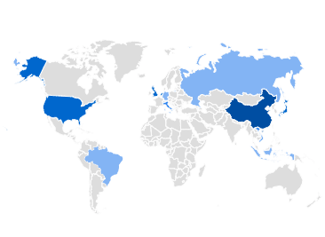
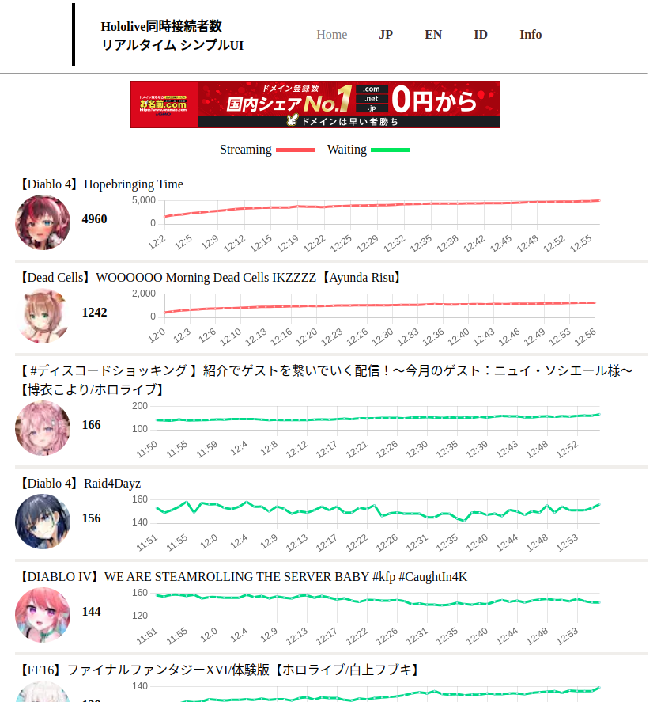

視聴者数をカウントするwebシステムを運用しています.
I run a web system that counts the number of viewers.
電気代の高騰により運用停止したサイト。
以下はgoogleのアナリティクス。複数の国からのユーザーを抱えていた。

運用していたサイト画面↓

以下は自作したプログラムコードです.
The following is the programme code created.